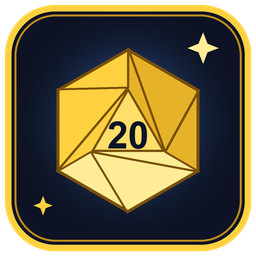

BuildBeast
Guida al livellamento, talenti e rotazione per WoW Forever. Installalo anche su ROG Ally e Steam Deck. Leveling, talents and rotation guide for WoW Forever. Install it on ROG Ally and Steam Deck too.
ROG Ally / Windows consigliato / recommended
Trova da solo la cartella di WoW Forever e installa l'ultima versione. Le tue impostazioni restano. Finds your WoW Forever folder and installs the latest version. Your settings are kept.
Scarica l'installerDownload the installer- Chiudi WoW.
- Close WoW.
- Doppio clic sul file scaricato (se Windows avvisa: "Maggiori informazioni" → "Esegui comunque").
- Double-click the downloaded file (if Windows warns: "More info" → "Run anyway").
- Avvia WoW Forever e scrivi
/bb. - Start WoW Forever and type
/bb.
Preferisci un comando? (PowerShell)Prefer a command? (PowerShell)
irm https://raw.githubusercontent.com/Sairiin/BuildBeast/main/docs/install-windows.ps1 | iexSteam Deck / Linux consigliato / recommended
Cerca WoW Forever nei prefissi Steam/Proton, Lutris, Heroic e Bottles. Searches for WoW Forever in Steam/Proton, Lutris, Heroic and Bottles prefixes.
- Chiudi WoW. Tieni premuto il tasto Steam → Alimentazione → Passa al Desktop.
- Close WoW. Hold the Steam button → Power → Switch to Desktop.
- Apri Konsole (terminale) e incolla il comando qui sotto, poi Invio.
- Open Konsole (terminal) and paste the command below, then Enter.
- Torna alla Modalita' Gioco e avvia WoW Forever: scrivi
/bb. - Return to Gaming Mode and start WoW Forever: type
/bb.
Se non trova WoW, ti chiede il percorso della cartella _forever_. Sul Deck lo script e' ancora in prova.
If WoW isn't found, it asks for the path of the _forever_ folder. The Deck script is still being tested.